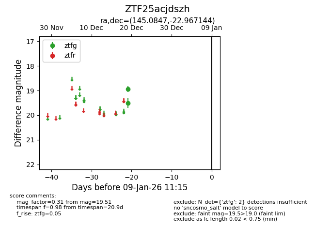
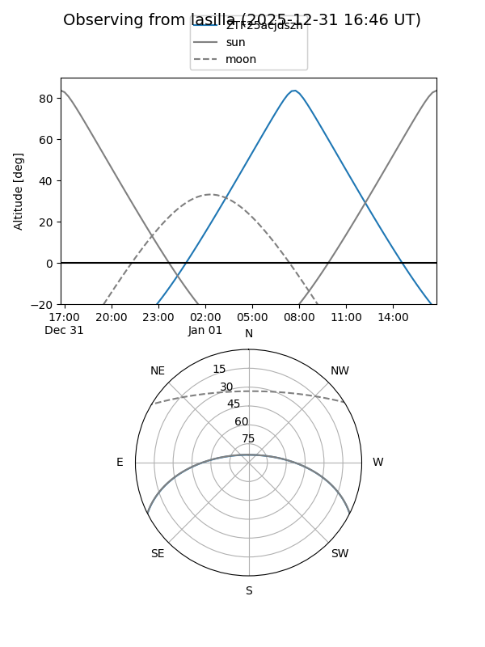
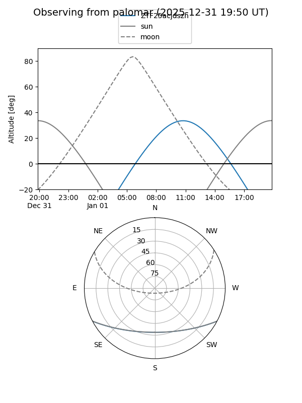

ZTF25acjdszh
Target ZTF25acjdszh at 2025-12-31 17:00
Aliases and brokers:
FINK:
Lasair:
ALeRCE:
alt names
ZTF25acjdszh (ztf,fink_ztf)
Coordinates:
equatorial (ra, dec) = 145.0847,-22.96714
equatorial (HMS+DMS) = 09:40:20.34,-22:58:01.72
galactic (l, b) = (255.6443,+21.88683)
Flags:
Photometry:
last ztfg=19.51
2 ztfg detections
Lightcurve

Visibility


Additional plots